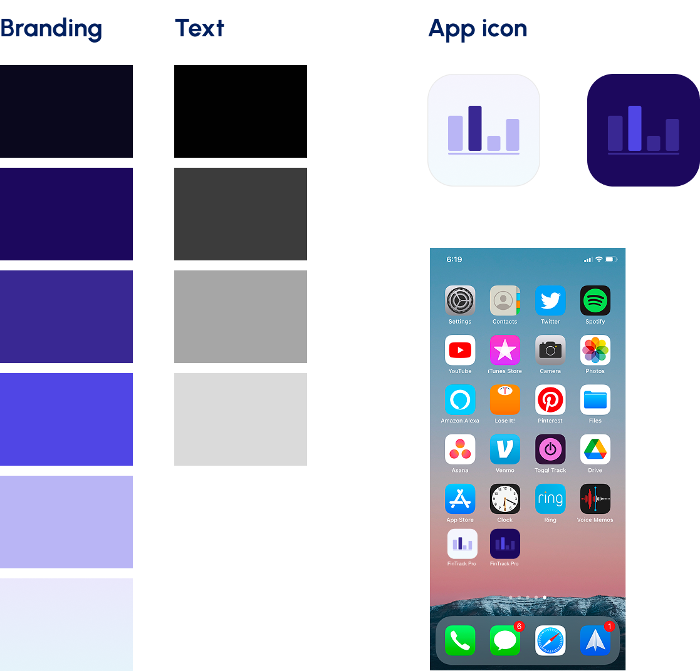

An application that will help users track their income, expense and saving including AI chatbot to help users plan the budget
FinTrack Pro is a financial tracking platform that helps users manage budgets, track income and expenses, and gain insights into their financial habits. The client wanted to transition their existing web platform into a mobile app, integrating AI capabilities to assist users with budget planning. The goal was to create a monetizable app with subscription options and expandable features.
Motiv Creative Labs
UI designer
1 month
Mobile
Figma, Notion
→ Transform FinTrack Pro’s web platform into a mobile app environment.
→ Maintain and enhance core financial tracking functionalities, including:
→ Integrate AI assistance for budget suggestions.
→ Enable monetization through tiered subscription levels.
→ Improve UI aesthetics and usability for a smoother, modern user experience.
I worked with Motiv Creative Labs and the client to take the initial sketches and drafts and enhance them visually. My focus was refining layout to improve hierarchy and flow, Designing a clean, modern, and easy-to-use UI and Ensuring the app was intuitive and visually consistent across screens
Review & Analyze DraftsI started with evaluate the sketches provided by the client and development team to understand the intended functionality and flow.
Then, Updated layouts for better usability, spacing, and visual hierarchy. and Chose a color palette, typography, and iconography that matched the brand and modern financial apps.

Lastly, Delivered polished screens and interactive prototypes ready for development, supporting future AI features and subscription tiers.